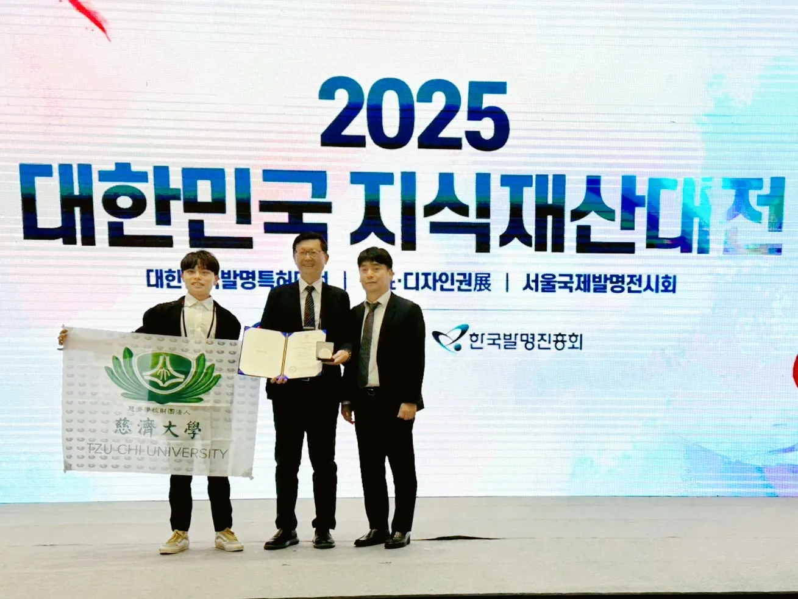
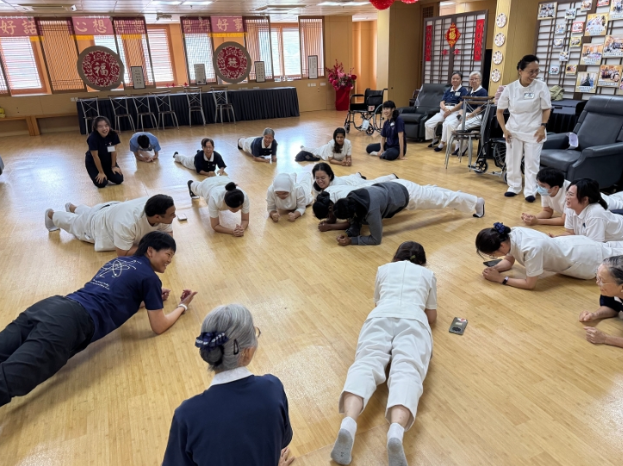

記載自民國 97 年創系至今的重要紀事，以及展示代表系所人文精神之學生作品。

國際發明展銀牌榮獲 2025 SIIF 韓國首爾國際發明展銀牌，結合壓力感測與姿態監測。
指導：楊志鴻 教授 | 團隊：林芃穎、林彥根、林采宣、張子明

學海築夢計畫赴美國物理治療診所、義大利杜林理工大學、馬來西亞與新加坡慈濟日間康復中心交流與實習。
代表學生：陳芊邑、鄭家靜、楊淑雅、吳穠華 等
獲教育部核准於慈濟大學設立物理治療學系，展開專業教學實驗室規劃與設備籌備。
首屆招生一班 45 名學生，全面導入 PBL（Problem-Based Learning）問題導向學習訓練。
選派優秀學生前往瑞典 Halmstad University 研習一年，開展國際交流新頁。
增設碩士班首屆招生，同步成立教育部體育署「運動防護體系東區輔導中心」。
通過教育部新南向學海築夢計畫前往新加坡實習，並開展美國加州 Kindess 診所海外見習合作。